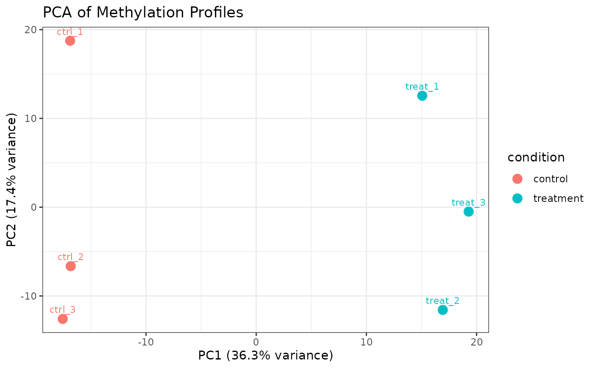
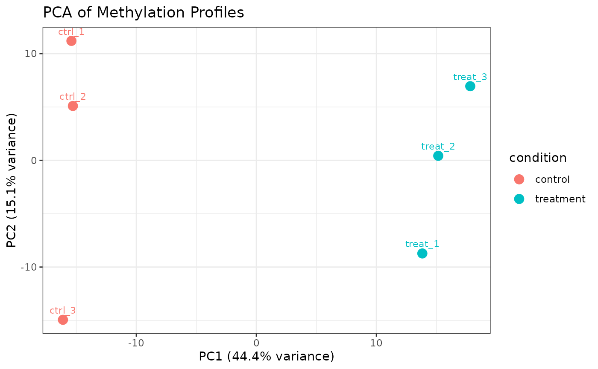

Performs principal component analysis (PCA) on per-sample methylation profiles and plots PC1 vs PC2. Useful for sample-level QC, detecting outliers, and assessing whether biological conditions separate in methylation space.
Usage
plot_pca(
object,
mod_type = NULL,
motif = NULL,
mod_context = NULL,
color_by = "condition",
shape_by = NULL,
return_data = FALSE
)Arguments
- object
A
commaDataobject.- mod_type
Character string specifying a single modification type (e.g.,
"6mA","5mC"). IfNULL(default), all sites from all modification types are used.- motif
Character vector or
NULL. If provided, only sites with matching sequence context motif(s) are included (e.g.,"GATC"). IfNULL(default), all motifs are included.- color_by
Character string naming a column in
sampleInfo(object)to use for point color. Default"condition".- shape_by
Character string naming a column in
sampleInfo(object)to use for point shape. IfNULL(default), all points use the same shape. Ignored whenreturn_data = TRUE.- return_data
Logical. If
TRUE, return the underlying scoresdata.frameinstead of a ggplot object. Useful for building custom plots. DefaultFALSE.
Value
When return_data = FALSE (default), a
ggplot object. PC1 and PC2 are shown on the x- and
y-axes, respectively, with percentage of variance explained in the axis
labels. Each point represents one sample and is labeled with its
sample_name. Points are colored by color_by.
When return_data = TRUE, a data.frame with one row per
sample containing columns PC1, PC2, sample_name, and
all columns from sampleInfo(object). The attribute
percentVar (accessible via attr(result, "percentVar")) is a
named numeric vector giving the percentage of variance explained by PC1 and
PC2.
Details
Beta values are first converted to M-values via mValues
(using alpha = 0.5) before PCA. M-values are variance-stabilized
relative to raw beta values, making distance-based analyses more reliable
especially when many sites are near 0 or 1. Sites with any NA
M-values across samples (including sites with zero coverage) are removed
to ensure a complete data matrix. PCA is computed via stats::prcomp
with centering (center = TRUE) and without scaling
(scale. = FALSE). A warning is issued if fewer than three samples
are present.
Examples
data(comma_example_data)
plot_pca(comma_example_data)
 # Color by condition, shape by replicate
plot_pca(comma_example_data, color_by = "condition")
# Color by condition, shape by replicate
plot_pca(comma_example_data, color_by = "condition")

# Only 6mA sites
plot_pca(comma_example_data, mod_type = "6mA")

# Return data for custom plotting
d <- plot_pca(comma_example_data, return_data = TRUE)
attr(d, "percentVar") # variance explained by PC1, PC2
#> PC1 PC2
#> 36.3 17.4